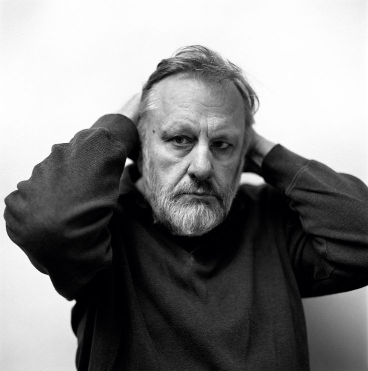

Who Is Slavoj Žižek?
Slavoj Žižek (born 1949) is a Slovenian philosopher, cultural critic, psychoanalytic theorist, and political commentator. He is one of the most widely recognized contemporary philosophers, known for combining ideas from German idealism, Marxism, Lacanian psychoanalysis, politics, popular culture, literature, and film.
Slavoj Žižek's philosophy is especially concerned with ideology and the hidden structures that shape how people understand reality. He argues that ideology is not simply a collection of false beliefs held by ignorant people, but something deeply connected with everyday habits, desires, institutions, and social life.
Žižek is strongly influenced by three major intellectual traditions: G. W. F. Hegel's dialectical philosophy, Karl Marx's critique of capitalism, and Jacques Lacan's psychoanalytic theory. His work attempts to bring these traditions together in order to understand modern society and the contradictions within human desire and political life.
He is also famous for his unusual philosophical style. Žižek frequently uses jokes, films, popular culture, political events, literature, and everyday examples to explain difficult philosophical ideas. This has made him both highly influential and controversial within contemporary philosophy and public intellectual life.
Slavoj Žižek: Quick Facts
- Full name — Slavoj Žižek
- Born — March 21, 1949
- Nationality — Slovenian
- Philosophical tradition — Continental philosophy, Marxism, German idealism, and psychoanalytic theory
- Major influences — G. W. F. Hegel, Karl Marx, Jacques Lacan, and Sigmund Freud
- Major fields — Philosophy, psychoanalysis, political theory, ideology criticism, and cultural theory
- Major subjects — Ideology, capitalism, desire, politics, culture, religion, and human subjectivity
- Famous concept — Ideology as a structure shaping social reality and desire
- Major work — The Sublime Object of Ideology
- Major intellectual influence — Lacanian psychoanalysis
- Known for — Combining philosophy with films, popular culture, politics, and psychoanalysis
- Historical period — Contemporary philosophy
Slavoj Žižek's Early Life and Education

Slavoj Žižek was born in 1949 in Ljubljana, in present-day Slovenia, which at the time formed part of socialist Yugoslavia. His intellectual development took place within a distinctive political and cultural environment in which Yugoslavia followed its own path within the wider socialist world. This environment exposed Žižek to Marxism and European political thought while also allowing significant contact with Western philosophy, literature, cinema, and popular culture. These different influences would later become central to the unusually broad range of his philosophical work.
Žižek studied philosophy and sociology at the University of Ljubljana, where he developed a strong interest in German Idealism, French structuralism, psychoanalysis, and political theory. His early academic work already showed an interest in thinkers whose ideas challenged simple assumptions about the human subject and social reality. He completed advanced work on French structuralism before earning a doctorate in philosophy in Ljubljana in 1981, with research focused on German Idealism. These traditions provided much of the conceptual foundation for his later philosophical development.
A decisive influence on Žižek's intellectual career was his encounter with the work of the French psychoanalyst Jacques Lacan. After completing his doctoral work in Ljubljana, Žižek spent several years studying in Paris under Jacques-Alain Miller, one of Lacan's most important students and interpreters. During this period, Žižek developed a deeper understanding of Lacanian psychoanalysis and completed further doctoral research that brought Lacanian concepts into dialogue with Hegel, Marx, and modern philosophy.
His intellectual formation therefore combined traditions that are often studied separately. Žižek brought together Hegelian dialectics, Marxist social criticism, Freudian and Lacanian psychoanalysis, and cultural analysis in order to investigate ideology and social contradiction. Rather than treating philosophy as a discipline isolated from everyday life, he increasingly examined films, jokes, political events, literature, religion, and popular culture as places where unconscious fantasies and ideological structures could become visible.
Why Is Slavoj Žižek Important?
Slavoj Žižek is important because he revived and transformed interest in several difficult philosophical traditions, bringing them into direct conversation with contemporary politics and culture. His work combines Hegelian philosophy, Marxist theory, Lacanian psychoanalysis, and cultural criticism in ways that have influenced philosophy, political theory, film studies, theology, sociology, and the humanities. Žižek challenges readers to examine how ideology continues to operate even in societies that understand themselves as rational, democratic, and politically free.
One of Žižek's most influential contributions concerns ideology. Traditional accounts often imagine ideology simply as a collection of false beliefs that disappear once people discover the truth. Žižek argues that the situation is more complicated because individuals can recognize contradictions within a social system while continuing to participate in its practices. Ideology may therefore operate not only through explicit belief but through habits, institutions, fantasies, rituals, and forms of enjoyment that structure everyday life.
His work is also important for bringing psychoanalysis into political and philosophical discussion. Žižek argues that human beings are not simply rational individuals who transparently understand their own desires and interests. Unconscious fantasy, symbolic structures, identification, and enjoyment can influence both personal behavior and collective political life. This allows him to ask why people sometimes remain attached to social arrangements that they consciously criticize or even experience as harmful.
Finally, Žižek has demonstrated that philosophy can analyze popular culture without treating it as intellectually insignificant. His discussions of films, literature, jokes, advertisements, and political events attempt to reveal deeper structures of ideology, desire, authority, and fantasy. This method has made his work accessible to audiences beyond academic philosophy, although it has also contributed to the provocative and unconventional style for which he is widely known.
The Historical Context of Slavoj Žižek's Philosophy
Slavoj Žižek developed his philosophy during the late twentieth and early twenty-first centuries, a period marked by the decline and collapse of several communist governments, the dissolution of Yugoslavia, the expansion of global capitalism, and major transformations in mass communication and popular culture. These developments produced renewed debates about democracy, ideology, nationalism, identity, and political power. Žižek's work emerged from this changing historical environment and repeatedly asks how people understand political reality after the apparent decline of older ideological certainties.
During this period, some influential political thinkers argued that the great ideological conflicts of the twentieth century were coming to an end and that liberal capitalism had become the dominant global model. Žižek challenged the suggestion that ideology had therefore disappeared. For him, ideology can become particularly difficult to recognize when people assume that they have already escaped it. A society may believe itself to be practical, realistic, and non-ideological while still treating historically produced institutions and assumptions as natural or inevitable.
His work also developed after major intellectual movements such as structuralism and post-structuralism had challenged the traditional image of the human being as a completely independent and transparent subject. Linguistic theory and psychoanalysis emphasized that individuals enter systems of language and symbolic meaning that existed before them. Žižek adopted many of these insights while resisting the idea that they required the abandonment of Hegelian dialectics or radical political theory.
Žižek entered this intellectual environment with a distinctive strategy. Rather than treating Hegel, Marx, Freud, and Lacan as thinkers belonging only to the past, he attempted to reinterpret their ideas for a historical situation dominated by global capitalism, consumer culture, mass media, and persistent political inequality. His philosophy therefore combines historical traditions with contemporary examples in order to investigate whether the structures shaping modern life are more contradictory than they initially appear.
Slavoj Žižek's Main Philosophical Ideas
1. Ideology Shapes More Than Conscious Belief
Žižek argues that ideology does not operate only through beliefs that people consciously accept and defend. Ideological structures can also shape social rituals, institutions, habits, desires, and assumptions about what appears normal, possible, natural, or inevitable. A person may reject a particular ideology at the level of conscious opinion while continuing to participate in practices that reproduce its underlying assumptions. For this reason, Žižek investigates ideology through behavior and fantasy as well as through explicit political ideas.
2. Human Desire Is Never Completely Simple
Influenced by Lacanian psychoanalysis, Žižek argues that human beings do not simply possess a clear and complete knowledge of what they want. Desire is shaped by language, social relationships, fantasy, and the symbolic world into which individuals are born. People may pursue particular objects while discovering that obtaining them does not permanently satisfy desire. Human subjectivity is therefore divided and complex rather than completely transparent to conscious self-understanding.
3. Contradiction Is Central to Reality
From Hegel, Žižek takes the idea that contradiction should not always be treated merely as an accidental error that must immediately disappear. Contradictions can reveal tensions within social systems, political institutions, identities, and ordinary understandings of reality. A system may appear stable and coherent until its internal conflicts become visible. Žižek therefore treats negativity, failure, and disruption as philosophically important moments capable of revealing the limitations of established ways of thinking.
4. Capitalism Produces Its Own Forms of Ideology
Žižek argues that modern capitalism is supported not only by economic institutions but also by fantasies and cultural narratives. Consumer culture can encourage individuals to imagine that personal choice and consumption provide complete freedom, identity, and satisfaction. Yet the multiplication of available choices does not necessarily mean that people can easily question the larger structures organizing economic and social life. His critique therefore examines the psychological and ideological attractions that can help existing systems reproduce themselves.
5. Popular Culture Can Reveal Philosophy
Films, advertisements, jokes, literature, and other cultural objects can reveal hidden assumptions about desire, ideology, fear, authority, and social life. Žižek therefore treats popular culture as a serious object of philosophical analysis rather than as a distraction from philosophy. Fictional stories can make unconscious fantasies visible by presenting conflicts and desires in exaggerated or symbolic forms. His use of popular culture demonstrates his broader belief that ideology is embedded throughout ordinary social experience rather than existing only in formal political doctrines.
What Did Slavoj Žižek Mean by Ideology?
Ideology is one of the central concepts in Slavoj Žižek's philosophy. In its broadest sense, ideology concerns the beliefs, images, narratives, and systems of meaning through which people understand society. However, Žižek gives the concept a more complex meaning by combining Marxist social criticism with Lacanian psychoanalysis. He is interested not only in what people consciously believe but also in the fantasies and practices that organize how social reality appears meaningful to them.
Žižek argues that ideology is not simply a false story invented by powerful people in order to deceive everyone else. Individuals may understand that certain social systems are unfair, contradictory, or historically created while continuing to participate in them through everyday habits and social practices. This means that cynical awareness does not automatically produce ideological freedom. Knowing that something is artificial does not by itself explain why people remain emotionally and socially attached to it.
Knowledge alone may therefore not be enough to escape ideology. A person can intellectually criticize consumerism while continuing to organize life around consumer practices, status, and consumption. Someone can recognize social inequality while accepting institutions that repeatedly reproduce unequal conditions. Žižek is interested in this gap between what people consciously know and the practices through which they continue to participate in social reality.
Žižek consequently examines the unconscious and emotional dimensions of ideology. Social systems can survive partly because they provide identity, security, meaning, fantasy, or forms of enjoyment. Ideology is therefore connected not only with deception but with the structures through which people learn what to desire and how to interpret the world. Understanding ideology requires examining what people do, enjoy, fear, and unconsciously expect, rather than simply listing the political beliefs they openly claim to hold.
Slavoj Žižek's Theory of Ideology Explained Simply
A simple understanding of ideology might say that people are manipulated because they do not know the truth. Žižek argues that modern ideology can operate in a more complicated way. People may possess extensive information about social problems, environmental damage, inequality, or economic exploitation and still continue to live within the same structures. The difficulty is therefore not always simple ignorance. Social knowledge does not automatically transform the practices through which people organize their lives.
For Žižek, ideology often works through everyday practices that become so familiar that they no longer appear ideological. People follow social rituals, accept economic arrangements, consume products, and organize their ambitions around assumptions that seem completely natural. Yet many of these assumptions are historically produced and could have been organized differently. Ideology can therefore operate most effectively when its underlying framework is experienced simply as ordinary reality.
Ideology can also operate through fantasy. Fantasy does not merely mean an imaginary escape from reality; in Žižek's Lacanian framework, it helps organize how reality itself becomes emotionally meaningful. Fantasies can provide explanations for social conflict, shape ideas about enemies and communities, and structure expectations about happiness or success. They can make difficult contradictions psychologically easier to tolerate by providing narratives through which those contradictions appear understandable.
Žižek's analysis therefore asks a difficult question: if people already know that a social system contains serious problems, why does criticism alone so often fail to produce major change? His answer directs attention toward unconscious attachment, social rituals, desire, and enjoyment. A system may continue not simply because people believe every part of it, but because it remains embedded in the practical and psychological structures through which they experience everyday life.
Slavoj Žižek and Jacques Lacan
Jacques Lacan was one of the most important influences on Slavoj Žižek's philosophy. Lacan developed a distinctive reinterpretation of Sigmund Freud and emphasized the importance of language, symbolism, desire, and the unconscious in the formation of human identity. For Lacan, the human subject is not a completely unified being who possesses transparent knowledge of itself. Žižek adopted this account of divided subjectivity and used it as a foundation for his analyses of ideology and political life.
Žižek used Lacanian psychoanalysis as a philosophical tool rather than treating it only as a clinical theory concerned with individual patients. He applied Lacanian concepts to politics, ideology, cinema, religion, nationalism, social institutions, and everyday cultural life. This unusual method allowed psychoanalysis to become part of a broader theory of how societies organize desire and how collective identities become emotionally meaningful.
One of the most important Lacanian ideas for Žižek is that human beings are not completely transparent to themselves. People may consciously describe their desires and motivations in one way while unconscious fantasies and symbolic structures influence them differently. This creates a division between conscious self-understanding and the deeper structures through which desire operates. Žižek uses this division to explain why rational arguments alone may fail to transform political or ideological attachments.
Žižek's interpretation of Lacan helped introduce Lacanian psychoanalysis to audiences outside the specialized world of psychoanalytic theory. At the same time, his use of Lacan remains highly technical because he connects psychoanalysis with Hegelian dialectics, Marxist criticism, and questions about ideology and subjectivity. Lacan therefore provides Žižek with more than a psychological theory: psychoanalysis becomes a way of investigating the contradictions through which individuals and societies understand themselves.
The Real, the Symbolic, and the Imaginary
Žižek frequently uses Lacan's distinction between the Imaginary, the Symbolic, and the Real. These concepts are difficult and should not be understood as three simple physical parts of reality. Instead, they describe interconnected dimensions involved in human experience, identity, language, and desire. Žižek uses this framework to analyze how people construct images of themselves, enter systems of social meaning, and encounter experiences that resist complete explanation.
The Imaginary is connected with images, identification, and the ways individuals form pictures of themselves and others. Human beings often create an image of personal identity as coherent and unified, even though their actual psychological experience may contain conflict, uncertainty, and contradiction. The Imaginary is therefore connected with identification and appearances, including the images through which people imagine who they are and how they relate to other people.
The Symbolic concerns language, social rules, and the systems of meaning through which individuals become part of society. People enter a world of names, laws, institutions, expectations, kinship structures, and cultural meanings that existed before their birth. Through language, individuals become recognizable to others, but they also become subject to rules and distinctions that they did not personally create. For Žižek, the Symbolic is therefore central to understanding both social identity and ideological order.
The Real is perhaps the most difficult concept. It does not simply mean ordinary reality or the physical world. In Žižek's Lacanian framework, the Real refers to what resists complete integration into language and symbolic understanding. It may appear through disruption, contradiction, trauma, or moments in which established systems of meaning fail to provide a satisfying explanation. The Real therefore marks a limit within human understanding rather than representing an ordinary object that can simply be described.
Slavoj Žižek on Desire
Desire is central to Žižek's philosophical use of psychoanalysis, especially his interpretation of Jacques Lacan. Human beings do not simply possess a fixed list of natural desires that can be permanently satisfied. Desire is shaped through language, social relationships, fantasy, and the symbolic world into which individuals are born. What people consciously say that they want may therefore differ from the deeper structures that organize their desire.
Žižek emphasizes the Lacanian distinction between an ordinary object of desire and what Lacan calls the object-cause of desire. People often imagine that obtaining a particular object, relationship, or social position will finally provide satisfaction, only to discover that desire continues after the object has been obtained. The object matters not simply because of its practical usefulness, but because it appears to promise something more elusive: a missing satisfaction that seems always to lie just beyond present experience.
This helps explain why consumer societies can continuously generate new desires. A commodity may temporarily satisfy a need, but the fantasy attached to it can produce further expectations and new objects of pursuit. Žižek therefore connects desire with lack: not merely the absence of a particular thing, but the structural incompleteness that keeps desire moving from one object and fantasy to another.
Žižek's philosophy does not suggest that people should simply eliminate desire. Instead, he investigates how ideology, advertising, culture, and social expectations help shape what people experience as desirable. This makes desire an important political as well as psychological question, because systems of power do not operate only by telling people what they must do; they can also influence what people learn to want.
What Is Jouissance in Žižek's Philosophy?
Jouissance is a major concept inherited from Lacanian psychoanalysis. It is often translated as enjoyment, but its meaning is more complicated than ordinary pleasure or happiness. Jouissance refers to an excessive form of enjoyment that can go beyond the limits of comfort and may exist alongside anxiety, suffering, frustration, compulsion, or obsession. For Žižek, human beings are not always motivated by the simple desire to achieve a peaceful and pleasurable life.
Žižek uses this concept to explain why people may remain attached to practices that they consciously describe as unpleasant. Repetition itself can become a source of enjoyment, even when the repeated activity produces dissatisfaction. Psychoanalysis therefore challenges the assumption that people always rationally pursue their own happiness or immediately abandon whatever causes them discomfort.
Political and ideological identities can also involve forms of enjoyment. People may become emotionally attached to resentment, conflict, rituals of belonging, fantasies about enemies, or the belief that another group is somehow enjoying privileges that have been denied to them. Such attachments help explain why ideological commitments cannot always be changed simply by providing more accurate information or stronger rational arguments.
The concept of jouissance therefore helps Žižek challenge the image of the human being as a completely rational actor. Understanding ideology requires examining not only what people consciously believe but also the forms of enjoyment that bind them to particular identities and social arrangements. This connection between enjoyment, ideology, and unconscious attachment is one of the distinctive features of Žižek's philosophical method.
Slavoj Žižek and G. W. F. Hegel
G. W. F. Hegel is one of the deepest philosophical influences on Slavoj Žižek. Žižek rejects the simplified picture of Hegel as a philosopher who created a perfectly closed system in which every contradiction is eventually dissolved into complete harmony. Instead, he reads Hegel through questions of negativity, division, historical conflict, and the instability that exists within apparently coherent forms of identity.
Žižek emphasizes contradiction and negativity within Hegelian dialectics. Reality should not always be imagined as a smooth system whose tensions can be removed from outside. Internal contradictions can reveal something fundamental about both social reality and human subjectivity. A system may appear stable precisely until its own internal tensions expose the limits of the assumptions on which that stability depends.
Žižek also uses Hegel to criticize fixed identities. Individuals and societies often attempt to define themselves through stable categories and coherent stories about who they are. Yet these identities can contain contradictions that undermine the appearance of complete unity. For Žižek, this instability is not merely an unfortunate defect that philosophy must eliminate; it can reveal the dynamic character of historical and subjective life.
Through Hegel, Žižek develops a philosophy in which negative experiences are not simply meaningless obstacles on the path toward progress. Failure, contradiction, conflict, and disruption can reveal the limitations of existing systems and force a reconsideration of what previously appeared natural or necessary. His distinctive reading of Hegel is closely connected with his attempt to bring German Idealism into dialogue with Lacanian psychoanalysis and Marxist critique.
Slavoj Žižek and Karl Marx
Karl Marx is another central influence on Žižek's thought. Žižek shares Marx's interest in ideology, capitalism, social inequality, and the historical structures that shape individual life. Like Marx, he is concerned with the difference between how social reality appears to people and the deeper structures that may organize economic, political, and cultural relations. :contentReference[oaicite:1]{index=1}
However, Žižek does not simply repeat traditional Marxist theory. He attempts to reinterpret Marx through Lacanian psychoanalysis and Hegelian philosophy. This allows him to investigate the psychological and symbolic dimensions of capitalism alongside its economic structures. His question is not only how a social system distributes wealth and power, but also why individuals can remain emotionally and imaginatively attached to systems whose contradictions they consciously recognize.
Žižek argues that capitalism does not survive only because people are externally forced to accept it. Modern consumer culture can produce desires, fantasies, and forms of identification that encourage people to experience themselves primarily as individuals freely choosing among commodities and lifestyles. Ideology can therefore operate even when people believe they are fully aware of its mechanisms.
His engagement with Marx consequently focuses on a continuing question: why do social systems remain stable even when their contradictions are widely recognized? Žižek argues that economic and political analysis must be supplemented by an investigation of unconscious fantasy, enjoyment, and symbolic identification. Marxism and psychoanalysis, in this sense, become complementary tools for examining both society and the human subjects who inhabit it.
Slavoj Žižek's Critique of Capitalism
Žižek is widely known for his criticism of contemporary capitalism. His critique does not focus only on economic inequality or the distribution of wealth. He also examines the cultural and ideological mechanisms through which capitalism can appear natural, inevitable, or impossible to replace, even to people who recognize many of its social and environmental consequences.
Consumer culture plays an important role in this analysis. Modern societies constantly encourage individuals to seek satisfaction through products, experiences, personal improvement, and new forms of consumption. Žižek is interested in the way capitalism can organize desire itself, continually promising satisfaction while ensuring that the process of wanting continues.
Žižek also argues that capitalism can absorb criticism and transform it into another commodity. Ideas about individuality, rebellion, environmental concern, ethical consumption, or personal authenticity can sometimes become part of marketing and consumer culture rather than functioning as serious challenges to the larger economic structure. This makes ideology more difficult to identify because criticism itself may be incorporated into the system it opposes.
His critique therefore asks whether people can genuinely imagine alternatives to existing systems. Žižek repeatedly investigates the ideological mechanisms that make major political transformation appear unrealistic while allowing people to imagine countless smaller changes within the same social structure. The difficulty of imagining an alternative, for him, can itself become one of the most powerful signs of ideology.
Dialectics and Contradiction in Žižek's Philosophy
Dialectical thinking is essential to Žižek's interpretation of Hegel and Marx. A dialectical approach examines tensions, contradictions, and internal transformations rather than assuming that reality can always be divided into simple, stable, and completely independent categories. For Žižek, apparent opposites are often connected more deeply than ordinary common sense suggests.
Žižek is particularly interested in situations where an attempt to solve a problem produces a new contradiction. Social systems often contain tensions that cannot be removed simply by making small adjustments while preserving every existing structure. A contradiction may indicate that the problem is not accidental but belongs to the way the system itself is organized.
Contradiction also appears within individual identity. People may imagine themselves as completely consistent and rational while simultaneously holding conflicting desires, beliefs, and emotional attachments. The psychoanalytic subject is therefore not a transparent unity that fully understands its own motives.
Dialectical philosophy consequently encourages attention to failure and negativity. Žižek argues that what appears to be a weakness, exception, or disruption may reveal an important truth about a system that normally remains hidden. Rather than immediately attempting to restore harmony, dialectical thought asks what the disturbance reveals about the structure that produced it.
Slavoj Žižek on the Human Subject
Žižek challenges the traditional idea that a person is a completely unified and self-transparent individual. Influenced by psychoanalysis, especially Lacan, he argues that human beings are divided subjects whose conscious identities do not contain the whole truth about their desires, motivations, and attachments. The subject is therefore marked by internal gaps rather than complete self-possession.
Language and society play an important role in the formation of identity. Individuals enter systems of names, social expectations, cultural rules, and symbolic meanings that shape how they understand themselves and their relationships with others. People do not first exist as completely formed identities and then simply use language to express themselves; symbolic structures participate in the formation of the self.
Yet Žižek does not simply conclude that individuals are passive products of society. The contradictions and gaps within subjectivity also create the possibility of freedom, transformation, and unexpected action. Because the individual is never perfectly identical with the social roles and symbolic identities assigned to them, those identities can be questioned and disrupted.
His theory of the subject is therefore deliberately paradoxical. Human beings are shaped by forces beyond complete conscious control, but this very lack of complete unity means that identity is never permanently fixed or totally determined. For Žižek, freedom does not arise from an imaginary position outside all social influence, but from confronting the divisions and contradictions through which subjectivity itself is constituted.
Slavoj Žižek on Freedom
Žižek questions ordinary liberal ideas about freedom. Modern societies often define freedom primarily as the ability to choose between different products, lifestyles, political opinions, or personal identities. While Žižek does not deny the importance of individual choice, he asks whether having many available options automatically means that a person is genuinely free.
Choices can occur within a system whose fundamental assumptions are never questioned. A person may be encouraged to choose freely while the deeper framework that determines what counts as a possible choice remains outside political discussion. Ideology can therefore shape freedom not simply by removing choices, but by organizing the field within which choices appear.
A person may freely choose among thousands of consumer products while having little influence over the larger economic and social structures that organize production, labor, wealth, and political possibility. Žižek therefore distinguishes between superficial choice and deeper forms of freedom that involve questioning the assumptions governing social life itself.
Genuine freedom, in this philosophical sense, may require confronting the ideological assumptions that determine what people consider possible. Freedom is not simply the ability to select an option within an existing framework; it can also involve questioning and transforming the framework itself. This makes freedom inseparable from critique, political imagination, and the difficult confrontation with social reality.
Slavoj Žižek's Political Philosophy
Politics occupies an important place in Žižek's work, although his political positions have often been controversial and difficult to place within simple ideological categories. His thought brings together Marxist concerns with capitalism and social transformation, Lacanian psychoanalysis, and Hegelian dialectics. This unusual combination makes his political philosophy less a conventional program than an attempt to examine the ideological limits of contemporary political imagination. :contentReference[oaicite:2]{index=2}
Žižek is particularly interested in the difference between ordinary political management and genuine political transformation. Governments and institutions may address particular problems while leaving the deeper structures of economic and social life unchanged. His philosophy asks when political activity merely improves the functioning of an existing order and when it begins to challenge the assumptions on which that order depends.
His political philosophy therefore investigates whether contemporary societies have lost the ability to imagine genuinely different forms of collective organization. The difficulty of imagining alternatives can itself become an ideological problem when an existing social system appears to be the only realistic possibility.
Žižek's political thought remains frequently debated because he often uses provocative arguments and refuses easy political labels. Supporters see his work as an attempt to expose intellectual complacency and reopen questions about radical social change, while critics argue that some of his political interventions remain ambiguous, provocative without sufficient practical guidance, or difficult to translate into concrete political programs.
Slavoj Žižek on Violence
Žižek distinguishes between obvious acts of physical violence and broader forms of violence embedded within social and political systems. Public attention often focuses on dramatic acts committed by identifiable individuals while ignoring structural conditions that produce poverty, exclusion, inequality, displacement, or political instability over much longer periods.
This distinction encourages readers to ask what counts as normal. A society may describe a particular event as violent while accepting persistent forms of suffering as ordinary consequences of economic or political life. Žižek's analysis therefore shifts attention from isolated events toward the background conditions that make certain forms of suffering predictable and socially tolerated.
Žižek's discussions of violence are controversial because he deliberately challenges conventional moral assumptions and attempts to provoke readers into examining the social conditions behind political conflict. His analysis should not be reduced to a simple approval of violence; rather, he asks how moral and political language can sometimes obscure the structural conditions in which violence emerges.
The philosophical importance of his analysis lies in the question it raises: should violence be understood only as an intentional act committed by one individual against another, or should political philosophy also examine impersonal systems that systematically produce preventable forms of suffering? This broader question connects Žižek's work on violence with his critique of ideology and capitalism.
Slavoj Žižek on Religion and Christianity
Žižek has written extensively about religion, especially Christianity. His interest is unusual because he often approaches Christian ideas through Hegelian philosophy, psychoanalysis, and radical political theory rather than through conventional religious belief. Religion becomes for him a philosophical field in which questions about freedom, community, sacrifice, authority, and human transformation can be examined.
He is particularly interested in the philosophical meaning of Christian concepts such as incarnation, sacrifice, community, and the death of God. Rather than treating these ideas only as theological doctrines, Žižek interprets them as resources for thinking about contradiction, human freedom, and the possibility of collective transformation.
Žižek therefore does not simply defend traditional Christian doctrine, nor does he adopt a conventional form of atheism that dismisses religion as merely irrational. He attempts to read religious narratives in ways that challenge both traditional belief and simplified secular criticism. His interpretations are consequently controversial among both religious and nonreligious readers.
His writings on Christianity demonstrate the unusual range of his philosophy. For Žižek, religion is not merely a private spiritual matter but also a symbolic and cultural structure capable of revealing important contradictions within society and human existence. Religious narratives can therefore become philosophical tools for investigating ideology, community, desire, and political possibility.
Slavoj Žižek, Film, and Popular Culture
One of the most distinctive features of Žižek's work is his extensive use of popular culture. He frequently analyzes Hollywood films, science fiction, comedy, literature, advertisements, and other cultural objects to explain complex philosophical ideas. His method deliberately challenges the traditional separation between supposedly serious philosophical material and the products of everyday entertainment.
Film is particularly important because fictional stories can reveal fantasies that remain hidden in ordinary political or philosophical language. A narrative may dramatize how people imagine authority, desire, freedom, fear, love, social order, and rebellion. Žižek often treats these cultural fantasies as clues to the unconscious assumptions through which societies understand reality.
Žižek does not use films merely to make philosophy entertaining or easier to understand. He argues that cultural objects can provide evidence about the fantasies through which people organize their social experience. A film may reveal ideological assumptions not because its creators consciously intended to express a political theory, but because cultural works can reproduce the deeper fantasies circulating within a society.
His method has influenced cultural studies and film theory while also making his philosophy accessible to audiences beyond academic philosophy. It demonstrates a broader principle of his work: serious philosophical problems do not exist only inside traditional philosophical books, because ideology, fantasy, and desire operate throughout the ordinary cultural world.
The Sublime Object of Ideology
The Sublime Object of Ideology, published in 1989, is one of Slavoj Žižek's most important and influential works. The book established his international reputation by bringing together Lacanian psychoanalysis, Hegelian philosophy, Marxist theory, and ideology critique in a distinctive philosophical synthesis. :contentReference[oaicite:3]{index=3}
The work examines how ideology operates through more than explicit political beliefs. Žižek investigates fantasy, desire, symbolism, and unconscious attachment in order to explain why social systems can remain powerful even when individuals are capable of recognizing many of their contradictions. Ideology, in this account, is connected not simply with what people think but with the practices and fantasies through which social reality becomes meaningful.
The book also challenges simplified understandings of Marxism and psychoanalysis. Žižek attempts to show that political structures and psychological structures cannot always be completely separated from one another. The analysis of social ideology must therefore take seriously the unconscious dimensions of identification, enjoyment, and fantasy.
The Sublime Object of Ideology remains important because it established many of the foundations of Žižek's distinctive philosophical method. Themes developed throughout his later work, including ideology, fantasy, contradiction, subjectivity, and Lacanian enjoyment, already appear in this influential book. It remains a central point of entry for understanding how Žižek connects philosophy with psychoanalysis and political critique.
Slavoj Žižek and Psychoanalysis
Psychoanalysis provides one of the central foundations of Žižek's philosophy. He draws primarily from Sigmund Freud and Jacques Lacan to challenge the idea that human behavior can be completely explained through conscious reasoning. Psychoanalysis allows Žižek to investigate the unconscious dimensions of desire, fantasy, identity, and social attachment. :contentReference[oaicite:4]{index=4}
The unconscious becomes important because people may act in ways that conflict with their conscious beliefs. A person may sincerely describe certain values while repeatedly participating in practices that contradict those values. Žižek is interested in this gap between what individuals say they believe and the forms of desire or enjoyment expressed through their actions.
Žižek uses psychoanalysis to understand political ideology. Social systems can become connected with unconscious fantasies and emotional forms of enjoyment that are not eliminated simply by presenting individuals with new information. This helps explain why ideological commitments may persist even when people consciously recognize facts that appear to contradict their stated beliefs.
This approach gives Žižek's political philosophy a distinctive character. Instead of asking only what people consciously believe, he asks what they desire, what they enjoy, what they fear, and what fantasies make a particular social reality psychologically meaningful. His philosophical project therefore brings psychoanalysis beyond the clinical study of individuals and uses it as a framework for interpreting ideology, culture, politics, and collective life.
Fantasy in Slavoj Žižek's Philosophy
Fantasy is not simply an escape from reality in Žižek's philosophical use of the concept. Drawing on Lacanian psychoanalysis, Žižek argues that fantasy helps organize the way people experience reality by providing an implicit framework through which desire, identity, and social relationships become meaningful. Fantasy does not necessarily hide reality from us; it can help structure the reality that we are capable of recognizing and inhabiting in the first place.
People often imagine that they encounter the world directly and then interpret what they see. Žižek challenges this assumption by arguing that cultural narratives, symbols, ideological expectations, and unconscious fantasies already influence what appears meaningful, desirable, threatening, possible, or intolerable. Fantasy therefore mediates between the individual and a social reality that is never experienced as completely neutral or self-explanatory.
Political ideology can consequently depend upon fantasy as much as upon explicit doctrine. Societies create narratives about national identity, enemies, freedom, success, happiness, security, and social belonging that help individuals imagine their place within a complicated world. Such fantasies can provide coherence and emotional satisfaction even when the social reality they organize contains serious contradictions.
Examining fantasy also helps explain why purely factual arguments do not always change political convictions. When a belief is connected with identity, desire, and unconscious enjoyment, disagreement involves more than a simple conflict between correct and incorrect information. Žižek therefore asks what psychological function a fantasy performs and what forms of desire or enjoyment may be threatened when that fantasy is challenged.
Žižek and Modern Consumer Culture
Žižek frequently analyzes consumer culture because it provides a visible example of the relationship between capitalism, ideology, and desire. Modern advertising rarely sells only practical objects. It often sells lifestyles, identities, fantasies, experiences, and promises of personal transformation, encouraging consumers to imagine that a product can provide access to a more complete or satisfying version of themselves.
A product may therefore be presented as a solution to emotional dissatisfaction or as a symbol of individuality, freedom, status, or authenticity. Žižek argues that this demonstrates how economic systems can become connected with deeper psychological structures. The object being purchased may matter less than the fantasy surrounding it and the promise that satisfaction is always waiting in the next experience or acquisition.
Consumer culture can also transform criticism into another commodity. Products may be marketed as rebellious, ethical, environmentally conscious, unconventional, or socially progressive while remaining integrated into the same larger economic system. Žižek is particularly interested in this capacity of capitalism to incorporate forms of opposition and convert them into new styles of consumption.
Žižek's analysis does not simply condemn every form of consumption or claim that individuals can escape ideology by refusing to buy things. Instead, he asks readers to investigate the fantasies attached to consumer choices and to question whether individual consumption alone can solve larger structural problems. His deeper concern is with the social system that continually turns dissatisfaction itself into a new source of economic activity.
Major Works of Slavoj Žižek
- The Sublime Object of Ideology — A major work combining Lacanian psychoanalysis, Hegelian philosophy, Marxist theory, and ideology criticism. First published in English in 1989, it established many of the themes that would define Žižek's later philosophical project.
- Looking Awry — A work exploring psychoanalysis, popular culture, desire, and ideology through unusual cultural and philosophical examples. The book uses films and everyday phenomena to introduce important ideas from Jacques Lacan's difficult theoretical system.
- Enjoy Your Symptom! — A philosophical exploration of Lacanian psychoanalysis, enjoyment, culture, and ideology. Žižek examines how symptoms and forms of enjoyment can reveal contradictions within both individual and collective life.
- Welcome to the Desert of the Real — A collection examining political reality, violence, ideology, and the changing global situation of the early twenty-first century, particularly in relation to the political consequences of the attacks of September 11, 2001.
- Violence — A philosophical examination of different forms of violence, including visible acts committed by individuals and broader systemic or symbolic conditions that may produce suffering while remaining socially normalized.
- Living in the End Times — A work examining capitalism, global crises, ideology, and contemporary political contradictions. Žižek considers how economic, ecological, and political crises expose tensions within the modern global order.
- Less Than Nothing — An extensive engagement with Hegel, dialectical philosophy, psychoanalysis, and the concept of negativity. The work represents one of Žižek's most ambitious attempts to develop a systematic philosophical interpretation of German Idealism and Lacanian theory.
- The Parallax View — A philosophical exploration of irreducible perspectives, contradiction, subjectivity, and contemporary thought. The concept of parallax becomes a way of examining tensions that cannot simply be reconciled by adopting one final neutral point of view.
Slavoj Žižek's Most Important Concepts
Ideology
Ideology is not merely a collection of false beliefs that disappears once people receive correct information. For Žižek, ideology can operate through social practices, institutions, fantasies, habits, rituals, and assumptions that shape how individuals experience reality and determine what appears normal, natural, or politically possible.
The Real
Influenced by Lacan, the Real refers to what resists complete symbolic representation and cannot be fully integrated into an orderly system of language and meaning. It can appear through contradiction, disruption, trauma, failure, or experiences that reveal a point at which ordinary explanations and symbolic frameworks break down.
Jouissance
Jouissance is a complex form of enjoyment that exceeds ordinary pleasure and may involve discomfort, obsession, suffering, or excessive emotional attachment. The concept helps Žižek explain why people can remain attached to practices and identities that they consciously describe as unpleasant or harmful.
Fantasy
Fantasy helps organize desire and social experience by providing frameworks through which people understand what they want and how they imagine relationships, communities, authority, and political reality. In Žižek's analysis, fantasy is therefore not simply opposed to reality but can structure the way reality itself becomes psychologically meaningful.
The Divided Subject
Human beings are not completely unified and transparent to themselves. Conscious identity exists alongside unconscious desires and symbolic structures that individuals cannot fully control. This division means that people may not completely know why they act, desire, or become attached to particular forms of social life.
Dialectical Contradiction
Contradictions are not always simple mistakes that can be removed by correcting an isolated error. For Žižek, they can reveal deeper tensions within identities, institutions, social systems, and philosophical concepts, exposing limits that remain hidden when reality is imagined as a harmonious and fully consistent whole.
Critique of Capitalism
Capitalism should be examined not only as an economic system but also as a structure that shapes desire, fantasy, identity, and assumptions about freedom and social possibility. Žižek investigates the ways consumer culture and ideology can make an existing social order appear natural even when individuals recognize many of its contradictions.
Slavoj Žižek's Influence and Legacy
Slavoj Žižek has had a major influence on contemporary philosophy, cultural theory, psychoanalytic studies, political theory, film studies, theology, and discussions about ideology. His work has helped renew interest in thinkers such as Hegel, Marx, and Lacan by bringing their ideas into direct engagement with contemporary political and cultural problems.
His influence extends beyond traditional academic philosophy because he regularly engages with current political events and popular culture. Films, literature, jokes, advertisements, and public controversies become material for philosophical analysis, making his work accessible to audiences outside specialist academic disciplines while preserving its connection with difficult theoretical traditions.
Žižek's interpretation of ideology has been particularly influential. His work encourages scholars and readers to examine the unconscious, emotional, symbolic, and ritual dimensions of political life rather than assuming that political beliefs are produced only through rational argument or explicit systems of doctrine.
His legacy remains controversial and actively debated. Some scholars consider him one of the most original contemporary interpreters of continental philosophy and psychoanalysis, while others criticize his style, political provocations, and the practical consequences of his theoretical positions. Nevertheless, his unusual combination of philosophy, psychoanalysis, politics, and popular culture has secured him a distinctive place in contemporary intellectual life.
Criticisms of Slavoj Žižek's Philosophy
Slavoj Žižek has received criticism for the complexity and distinctive style of his writing. His work frequently moves between philosophy, psychoanalysis, jokes, films, politics, and unexpected cultural examples, which some readers find intellectually exciting but others find difficult to follow. Critics sometimes argue that the rapid movement between examples can obscure the precise structure of an argument.
Critics have also argued that Žižek sometimes places too much emphasis on theoretical analysis and not enough on practical political solutions. His criticism of capitalism and ideology can be powerful, but readers often disagree about what concrete alternatives his philosophy supports or how his abstract conception of radical political change should be translated into institutions and political practice.
His political statements have generated substantial controversy. Because Žižek frequently uses provocation, paradox, exaggeration, and dialectical reversal as philosophical tools, particular comments can be interpreted differently by supporters and critics. This has contributed to his public reputation as a controversial intellectual whose style sometimes makes it difficult to separate deliberate provocation from straightforward political prescription.
Despite these criticisms, Žižek's work remains influential because it forces readers to confront difficult questions. Why do people remain attached to systems they criticize? Why does knowledge not always produce change? How can ideology survive even when its contradictions are publicly visible? And how do desire and unconscious fantasy shape political life? These questions remain central to the continuing debate surrounding his philosophy.
Slavoj Žižek's Philosophy Explained Simply
- What is Žižek's main idea? Žižek examines how ideology, desire, unconscious fantasy, and social structures shape the way people understand themselves and the world.
- What does Žižek mean by ideology? Ideology is not simply false information. It can operate through habits, institutions, fantasies, social rituals, and assumptions about what is normal, natural, or politically possible.
- Why is Lacan important to Žižek? Lacanian psychoanalysis provides Žižek with concepts for understanding desire, the unconscious, language, fantasy, jouissance, and the divided human subject. It allows him to connect psychological structures with political and cultural analysis.
- Why does Žižek discuss films? Films and popular culture can reveal hidden fantasies and ideological structures that influence how societies understand desire, authority, freedom, fear, and reality. Cultural examples also allow abstract philosophical concepts to become visible in familiar narratives and images.
- What is Žižek's view of capitalism? He argues that capitalism should be examined as both an economic and ideological system that shapes consumer desires, fantasies, and assumptions about freedom, happiness, and social possibility.
- Why is Hegel important to Žižek? Žižek uses Hegelian dialectics to examine contradiction, negativity, failure, and the instability of apparently complete philosophical and social systems. He rejects the simplified view that Hegelian thought merely resolves every contradiction into final harmony.
Why Does Slavoj Žižek Still Matter Today?
Slavoj Žižek remains relevant because modern societies continue to struggle with ideology, political polarization, consumer culture, inequality, technological change, and questions about the relationship between individual freedom and larger social systems. His philosophy provides concepts for examining why apparently rational societies can continue to reproduce contradictions that many people openly recognize.
His analysis of ideology is particularly relevant in an age of social media and constant information. People now have access to enormous quantities of information, but greater access to facts does not automatically eliminate political conflict or ideological attachment. Žižek's work encourages attention to the emotional, symbolic, and social structures that influence how information is interpreted and incorporated into existing beliefs.
Žižek's focus on desire also remains important. Digital platforms, advertising systems, and consumer culture increasingly compete for attention and help shape what individuals believe they need in order to become successful, attractive, happy, authentic, or socially recognized. His analysis raises questions about whether apparently personal desires are always as independent from wider cultural systems as they appear.
Most importantly, Žižek encourages readers to question assumptions that appear completely natural. His philosophy asks whether people are genuinely free when they can choose between many available options but cannot easily imagine changing the deeper structures that organize those choices. This continuing challenge—to examine not only what we believe but the frameworks that determine what we consider possible—is one reason his philosophy continues to provoke debate.
Frequently Asked Questions About Slavoj Žižek
Who is Slavoj Žižek?
Slavoj Žižek is a Slovenian philosopher, cultural critic, psychoanalytic theorist, and political commentator born in 1949. He is known for combining Hegelian philosophy, Marxism, Lacanian psychoanalysis, political theory, and popular culture.
What is Slavoj Žižek famous for?
Žižek is famous for his theories of ideology, his interpretation of Jacques Lacan, his engagement with Hegel and Marx, and his use of films, popular culture, and everyday examples to explain complex philosophical ideas.
What is Žižek's philosophy?
Žižek's philosophy examines ideology, desire, psychoanalysis, capitalism, politics, culture, religion, and human subjectivity. He argues that unconscious fantasies and social structures shape human experience more deeply than people often realize.
What does Žižek mean by ideology?
Žižek argues that ideology is more than false belief. It can operate through everyday habits, institutions, fantasies, social rituals, and assumptions about what is natural, normal, possible, or inevitable.
Why is Jacques Lacan important to Žižek?
Lacan provided Žižek with important concepts concerning the unconscious, desire, language, fantasy, jouissance, and the divided human subject. Žižek applied these ideas to politics, culture, and ideology.
What is jouissance?
Jouissance is a Lacanian concept often translated as enjoyment, but it refers to a more complex and excessive form of enjoyment that can involve discomfort, suffering, obsession, or irrational emotional attachment.
What does Žižek think about capitalism?
Žižek criticizes capitalism as both an economic and ideological system. He examines how consumer culture shapes desire and how capitalism can make its own structures appear natural or difficult to imagine beyond.
Why does Žižek use movies and popular culture?
Žižek believes that films and popular culture can reveal hidden social fantasies and ideological structures. Cultural stories often express ideas about desire, authority, freedom, fear, and identity.
Is Slavoj Žižek a Marxist?
Žižek is strongly influenced by Karl Marx and Marxist theory, but his philosophy also combines Hegelian dialectics and Lacanian psychoanalysis. His approach therefore differs from more traditional forms of Marxism.
Is Slavoj Žižek a communist?
Žižek frequently identifies with radical left and communist philosophical traditions, but his political thought is complex and often deliberately provocative. His work focuses heavily on criticizing capitalism and questioning contemporary political assumptions.
Why is Hegel important to Žižek?
Žižek uses Hegel's dialectical philosophy to examine contradiction, negativity, identity, and social transformation. He emphasizes the tensions and failures within systems rather than imagining Hegel as a philosopher of simple harmony.
What is The Sublime Object of Ideology about?
The Sublime Object of Ideology examines ideology through Lacanian psychoanalysis, Hegelian philosophy, and Marxist theory. It explores how fantasy, desire, and unconscious structures contribute to the persistence of social and political systems.
Why is Slavoj Žižek controversial?
Žižek is controversial because of his provocative style, complex political statements, radical criticism of contemporary society, and willingness to challenge widely accepted assumptions from unexpected philosophical perspectives.
Related Modern and Contemporary Philosophers
Explore other major thinkers connected with dialectics, Marxism, psychoanalysis, existentialism, political philosophy, culture, identity, and the development of contemporary thought.
Related Areas of Philosophy
Slavoj Žižek's philosophy connects political philosophy, social philosophy, philosophy of mind, psychoanalysis, metaphysics, epistemology, ethics, cultural theory, and contemporary philosophy.
Why Slavoj Žižek Still Matters
Slavoj Žižek remains one of the most distinctive contemporary philosophers because he refuses to separate philosophy from politics, culture, psychology, and everyday life. His work combines difficult intellectual traditions while examining the contradictions of modern capitalism and contemporary society.
His theory of ideology remains especially important. Žižek challenges the comfortable belief that people automatically become free once they possess correct information. Human beings can understand social problems while remaining emotionally and practically attached to the systems that produce them.
Through Hegel, Marx, and Lacan, Žižek developed a philosophical method for examining contradiction, desire, fantasy, and social reality. Whether readers agree with his political conclusions or not, his work forces them to question assumptions that normally remain invisible.
Žižek's lasting importance lies in his central philosophical question: if people often know that something is wrong, why is it so difficult to change? His attempt to answer this question through ideology, psychoanalysis, culture, and politics ensures that Slavoj Žižek's philosophy remains deeply relevant to contemporary thought.
Explore Great Philosophers